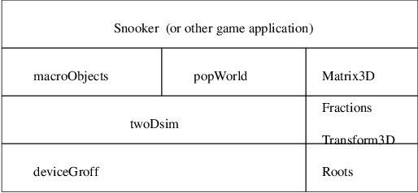

pge/c/macroObjects.c
macroObjects_Macro macroObjects_rotate (macroObjects_Macro m,
Points_Point p, Fractions_Fract r)
{
PolyMatrix3D_Matrix a;
PolyMatrix3D_Matrix b;
PolyMatrix3D_Matrix c;
PolyMatrix3D_Matrix d;
macroObjects_Macro n;
/* a: translate point, p, to the origin. */
a = Transform3D_translate (Points_negatePoint (Points_dupPoint (p)));
b = Transform3D_rotate (r); /* b: rotate, r, radians. */
c = Transform3D_translate (p); /* c: translate from origin to point, p. */
d = PolyMatrix3D_mult3 (a, b, c); /* d: combine a, b and c transforms. */
n = macroObjects_initMacro ();
n = foreachObject (n, m, d); /* n: for every object in m transform using, d. */
return n;
}
$ make npn
$ gdb a.out
(gdb) break macroObjects_rotate
(gdb) run
Breakpoint 24, macroObjects_rotate (m=0x6797f0, p=...,
r=0x697ef0) \
at macroObjects.mod:562
(gdb) next
(gdb) print dmat(a)
+-
| 1 0 0
| 0 1 0
| -.1/4 -.1/4 1
+- 1 = void
(gdb) next
(gdb) print dmat(b)
+-
| cos((pi/2)) -1 0
| sin((pi/2)) cos((pi/2)) 0
| 0 0 1
+- 2 = void
(gdb) next
(gdb) print dmat(c)
+-
| 1 0 0
| 0 1 0
| .1/4 .1/4 1
+- 3 = void
(gdb) next
(gdb) print dmat(d)
+-
|
((1*((cos((pi/2))*1)+0))+((0*((sin((pi/2))*1)+((cos((pi/2))*0)+0)))+0))
\
((1*((cos((pi/2))*0)+-1))+((0*((sin((pi/2))*0)+((cos((pi/2))*1)+0)))+0))
\
((1*((cos((pi/2))*0)+0))+((0*((sin((pi/2))*0)+((cos((pi/2))*0)+0)))+0))
\
|
((0*((cos((pi/2))*1)+0))+((1*((sin((pi/2))*1)+((cos((pi/2))*0)+0)))+0))
\
((0*((cos((pi/2))*0)+-1))+((1*((sin((pi/2))*0)+((cos((pi/2))*1)+0)))+0))
\
((0*((cos((pi/2))*0)+0))+((1*((sin((pi/2))*0)+((cos((pi/2))*0)+0)))+0))
\
|
((-.1/4*((cos((pi/2))*1)+0))+((-.1/4*((sin((pi/2))*1)+((cos((pi/2))*0)+0)))+.1/4))
\
((-.1/4*((cos((pi/2))*0)+-1))+((-.1/4*((sin((pi/2))*0)+((cos((pi/2))*1)+0)))+.1/4))
\
((-.1/4*((cos((pi/2))*0)+0))+((-.1/4*((sin((pi/2))*0)+((cos((pi/2))*0)+0)))+1))
+- 4 = void
(gdb) print PolyMatrix3D_eval(d)
4 = (POINTER TO RECORD ... END ) 0x6876e0
(gdb) print dmat(d)
+-
| 0 -1 0
| 1 0 0
| 0 .1/2 1
+- 15 = void
$ make snooker
gm2 -pg -g -fiso -fextended-opaque -fonlylink snooker.mod $ ./a.out
$ gprof a.out
Flat profile: Each sample counts as 0.01 seconds. % cumulative self self total time seconds seconds calls s/call s/call name 34.22 2.06 2.06 99486 0.00 0.00 initEntity 30.15 3.88 1.82 132186249 0.00 0.00 Indexing_InBounds 29.49 5.65 1.78 132183929 0.00 0.00 Indexing_GetIndice 1.41 5.74 0.09 Indexing_DebugIndex 1.08 5.80 0.07 2320 0.00 0.00 Indexing_PutIndice 0.50 5.83 0.03 236365 0.00 0.00 unMarkEntity
$ cd
$ mkdir -p Sandpit
$ cd Sandpit
$ git clone https://github.com/gaiusm/pge
$ cd
$ mkdir -p Sandpit
$ cd Sandpit
$ rm -rf build-pge
$ mkdir build-pge
$ cd build-pge
$ ../pge/configure --prefix=$HOME/opt
--enable-langc
$ make
$ cd
$ cd Sandpit/build-pge
$ ./localrun.sh
../pge/examples/breakout/breakout.py
This document was produced using groff-1.22.